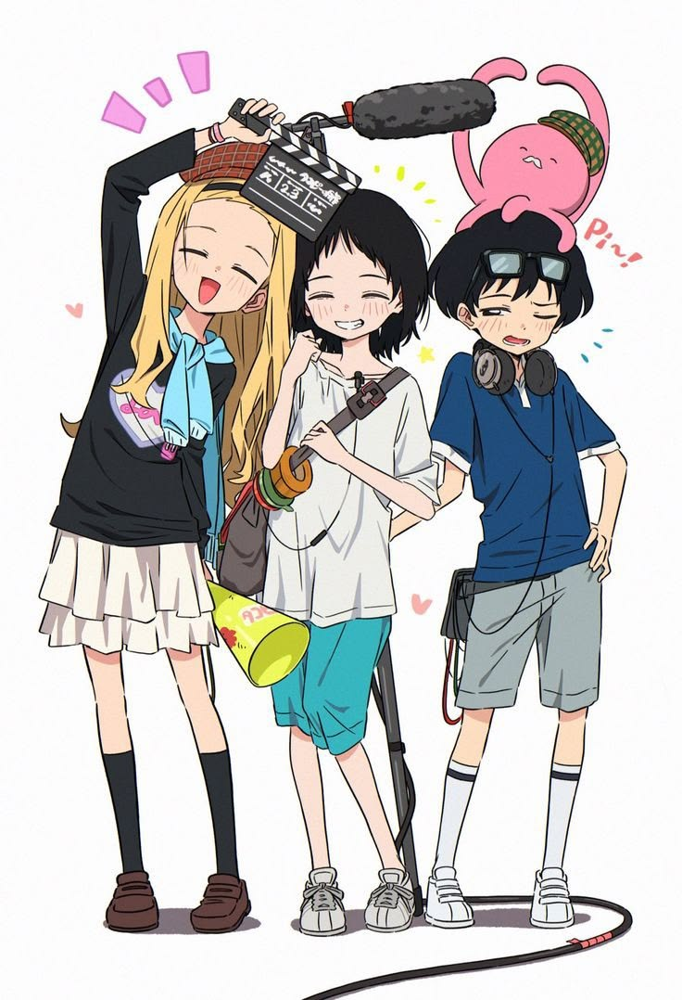
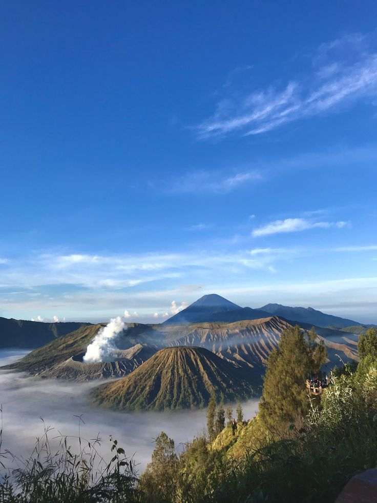
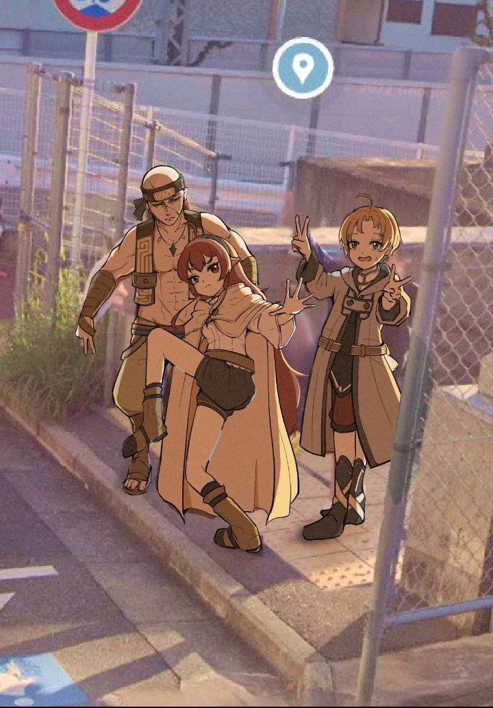
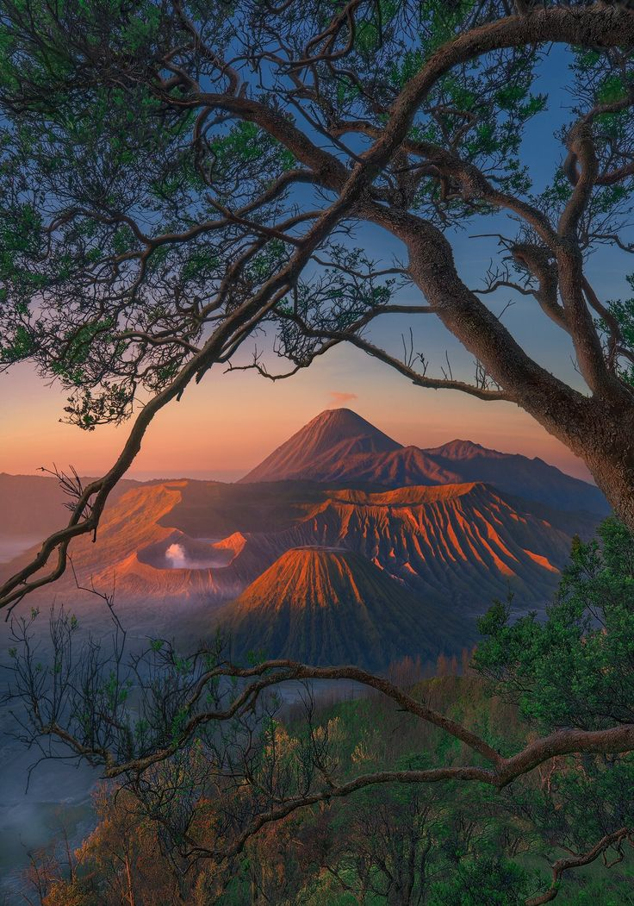
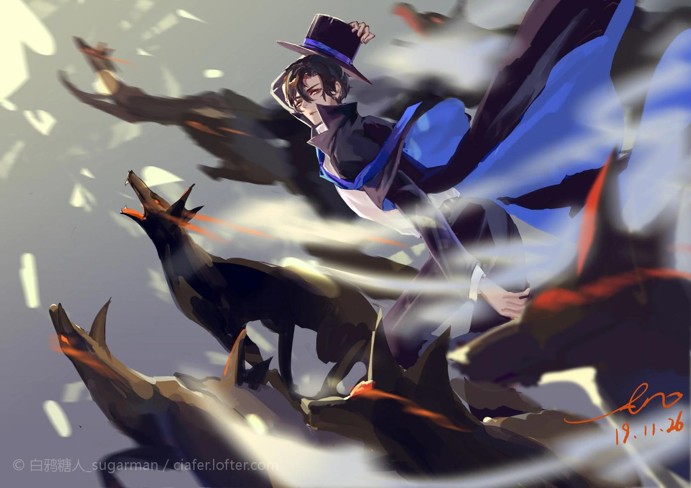
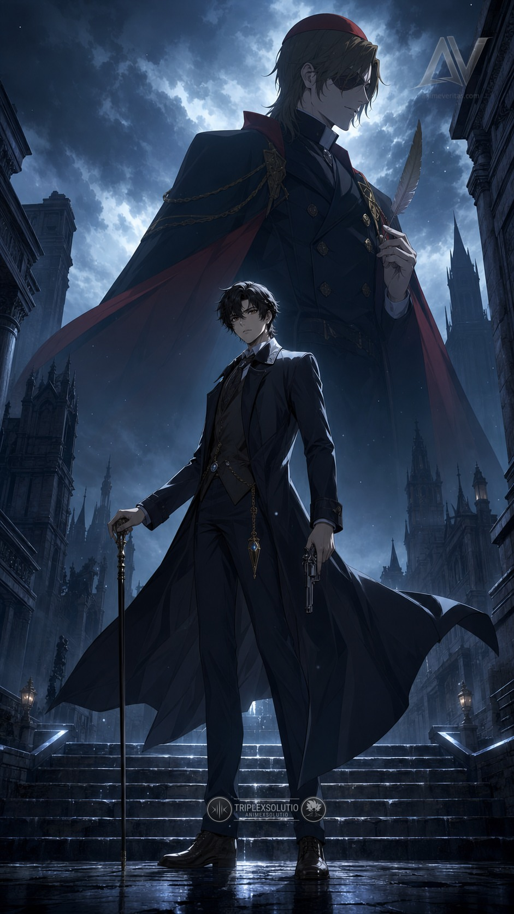

Batik Tulis Nusantara
Rp450.000
Kain batik dengan motif tradisional yang dibuat melalui proses membatik dan pewarnaan secara teliti.
© BY MARZA
Indonesia menyimpan pesona yang tak terbatas, dari bentang alam yang memukau hingga tradisi yang diwariskan lintas generasi. Setiap pulau memiliki cerita, setiap daerah memiliki identitas, dan setiap perjalanan membuka cara baru untuk mengenal Nusantara.






Rp450.000
Kain batik dengan motif tradisional yang dibuat melalui proses membatik dan pewarnaan secara teliti.
Rp650.000
Kain tenun khas Sumba yang menampilkan motif, warna, dan identitas budaya setempat.
Rp350.000
Kerajinan perak dari Kotagede, Yogyakarta, yang dikenal melalui keterampilan pengerjaan logamnya.
Rp175.000
Produk anyaman yang memadukan keterampilan tradisional dengan fungsi sehari-hari.
Rp500.000
Kerajinan ukir kayu yang merepresentasikan tradisi kriya Jepara.
Rp275.000
Kerajinan kulit dengan karakter visual yang berakar pada tradisi pertunjukan wayang.
Rp200.000
Karya keramik dengan bentuk dan teknik yang terinspirasi dari kerajinan lokal Indonesia.
Rp325.000
Aksesori yang menampilkan keindahan mutiara dari wilayah perairan Indonesia.